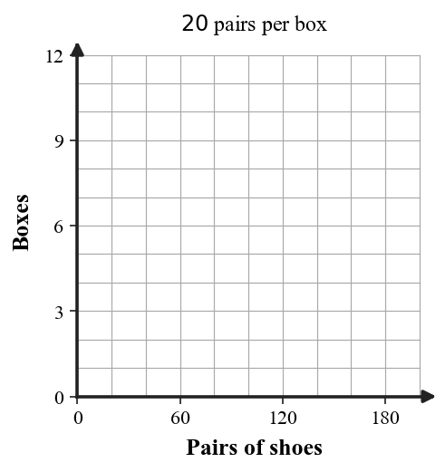
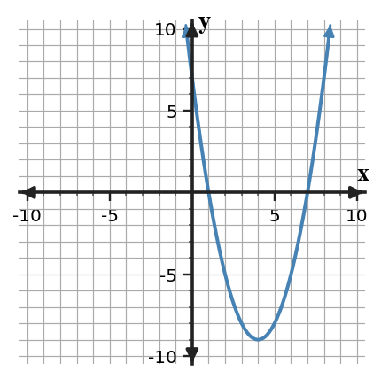

4.
A fog machine costs \$60 for delivery plus \$38 for each block of up to $3$ rental days. Use the blank axes to graph the cost for $0$ to $21$ days.

This set gives practice with selecting linear, quadratic, and exponential models from patterns, graphs, tables, and contexts. Show the evidence you use, especially when a representation gives more than one possible clue.
For the table, state the likely function family and the pattern clue.
| $x$ | $0$ | $1$ | $2$ | $3$ | $4$ |
|---|---|---|---|---|---|
| $y$ | $1$ | $4$ | $9$ | $16$ | $25$ |
For the table, state the likely function family and the pattern clue.
| $x$ | $0$ | $1$ | $2$ | $3$ | $4$ |
|---|---|---|---|---|---|
| $y$ | $3$ | $6$ | $12$ | $24$ | $48$ |
The leadership class collects shoes. Each box holds $20$ pairs. Use the blank axes to make a step graph showing boxes needed for $0$ to $200$ pairs of shoes.

A fog machine costs \$60 for delivery plus \$38 for each block of up to $3$ rental days. Use the blank axes to graph the cost for $0$ to $21$ days.
Use the zero product property to solve each equation.
Write a factored equation with zeros $-4$ and $6$.
Solve or interpret the quadratic situation for Solving Quadratics by Factoring. Show the algebra that supports your answer.
Solve $x^2-7x-18=0$ by factoring.
Solve or interpret the quadratic situation for Solving Quadratics by Factoring. Show the algebra that supports your answer.
A rectangle has area $54$ and side lengths $x$ and $x+3$. Find possible positive $x$.
Solve or interpret the quadratic situation for Solving Quadratics by Factoring. Show the algebra that supports your answer.
Complete the table, then decide whether $x=2$ and $x=5$ are zeros of $f(x)=x^2-7x+10$.
| $x$ | 2 | 5 |
|---|---|---|
| $f(x)$ |
Critique Error. Analyze the quadratic evidence for Solving Quadratics by Factoring. Write a conclusion and justify it with algebraic or graphical evidence.
Identify the error, correct the solution, and explain how the structure shows the mistake.
Two-Method Analysis. Analyze the quadratic evidence for Solving Quadratics by Factoring. Write a conclusion and justify it with algebraic or graphical evidence.
Solve $x^2-8x+7=0$ two ways. Then explain which method is more efficient and why.

Design A Model Or Context. Create or revise a quadratic task for Solving Quadratics by Factoring using the constraints below.
Use the provided graph as one representation. Design a launch-or-break-even context for a quadratic with two positive zeros; write a factored equation that matches the estimated intercepts and explain what both zeros mean in the context.

For each sequence, decide whether it shows repeated addition, repeated multiplication, or neither. State the common difference or common ratio when one exists.
Complete the missing outputs by using the same multiplicative pattern in each table.
| Step | 0 | 1 | 2 | 3 | 4 |
|---|---|---|---|---|---|
| Pattern A | 5 | 15 | 45 | ||
| Pattern B | 96 | 48 | 24 |
A phone app starts with 180 users and the number of users is multiplied by 1.25 each week.
A student classifies the sequence 6, 12, 24, 48, ... as linear because each term is larger than the previous term.
A table has constant second differences. Which function family is the best model?
Values multiply by $3$ each time $x$ increases by $1$. Linear, quadratic, or exponential?
A pattern starts at $5$ and doubles each step. Is it growth or decay?
Solve $(x-4)(x+1)=0$.